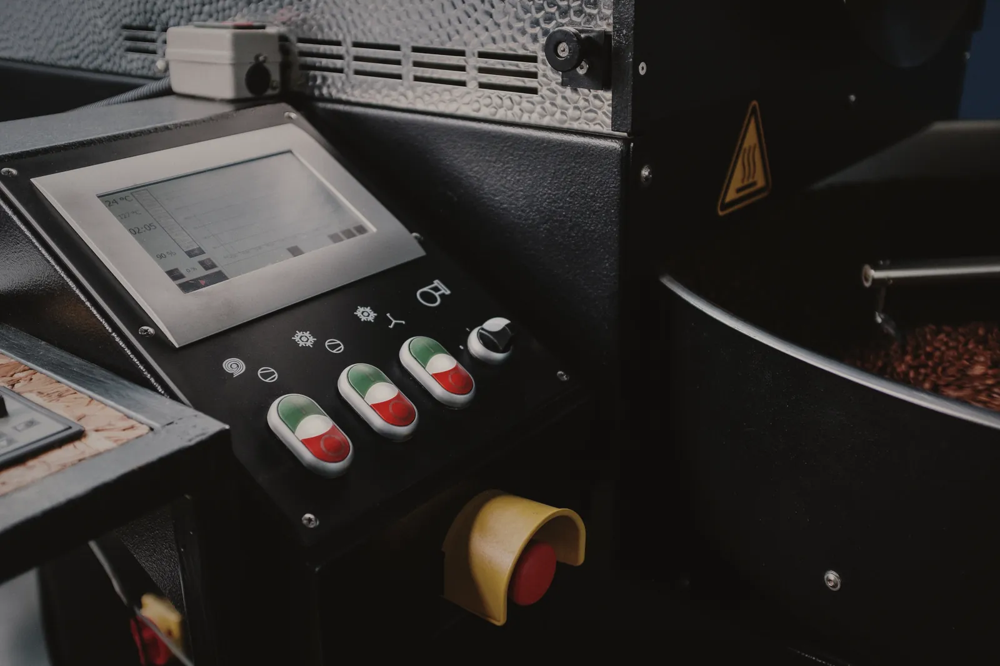

Six batches, one log
Every batch is logged against the one before it: charge temperature, time to first crack, time from crack to drop. If batch five runs eight seconds long, it goes in the log and someone finds out why before next Monday.
We do not blend batches to average them out. Each bag carries its batch number beside the date.